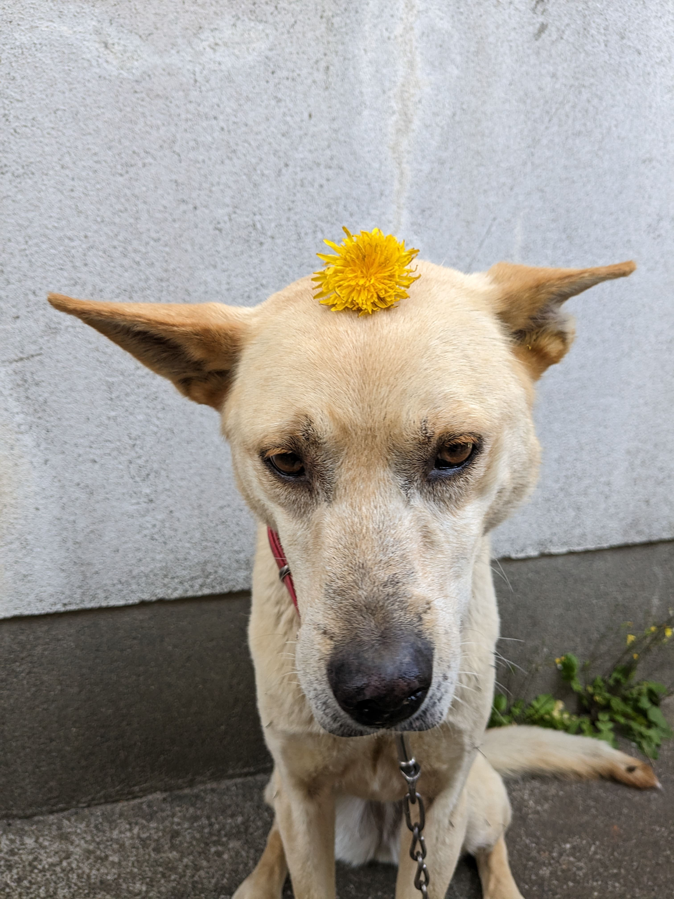

Introduce
Hi! My name is Shintaro Miyata. I am a software engineer with a passion for building scalable, high-performance systems that deliver seamless user experiences. This website is a space for me to showcase my work, experiments, and perspectives in web development.
Currently, I am studying in a Web Developer course at Tamwood Career College.
Since 2019, I have been working on various projects leveraging modern web technologies to create intuitive and efficient user interfaces. My goal is to continuously learn and improve my skills while contributing to meaningful projects.
My experience includes developing internal systems for a second-hand goods company, building management platforms for clients in the cryptocurrency industry, and troubleshooting and fixing bugs in e-commerce platforms.
In my spare time, I enjoy playing badminton, watching movies and anime, and going for walks on sunny days.
